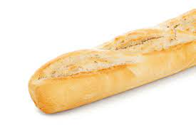

French baguette

Description
With this recipe you will be making some delicious, traditional baguette.
And the best thing, you only need very simple ingredients and some time
Ingredients
- 250 ml Water
- 500g All purpuose flour
- yeast
- salt
Steps
- Mix all the ingredients together and knead the dough (The dough has to be wet)
- Fold the dough without applying pressure every 20 minutes as to allow as much air into the dough as possile
- After folding the dough at least three times, preheat the oven to the highest temperature and lay out the dough giving it the desired shape
- Once oven has been preheated, place the dough in the oven and wait aprox. 20 minutes
And thats it! You have made your very own baguette bread.
You can eat it right away while its still crispy and warm (wait a little bit for it to cool down)
Or you can put it in the freezer and store it for an ocasional snack/breakfast